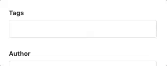

We have added an easy way to change the background colour of the posts on your blog (in masonry view).
To change the background just add an adequate tag to the post.
Remember to add # before the tag!

#gray
#gold
#dark
#red
#blue
#green
#yellow
#violet